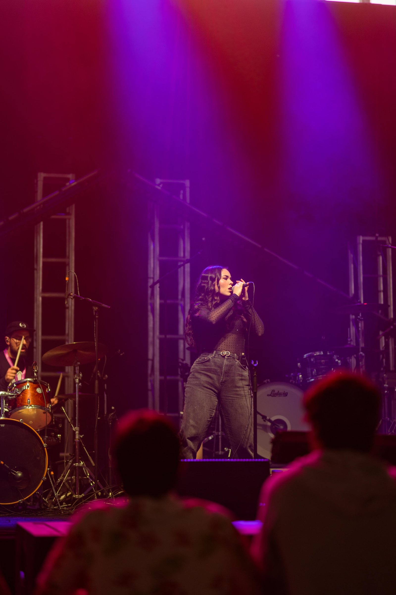
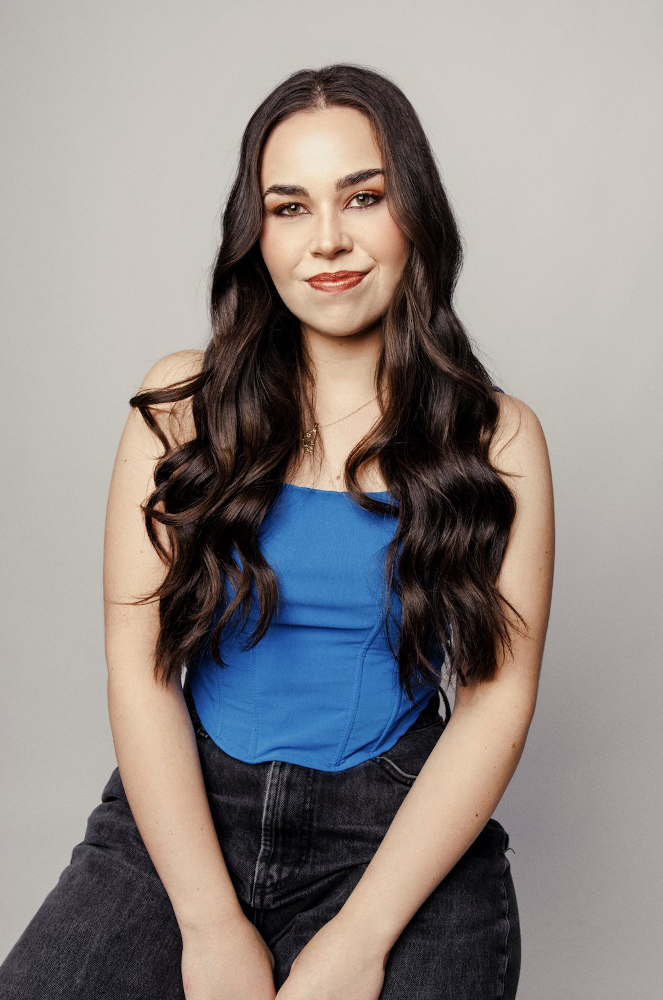
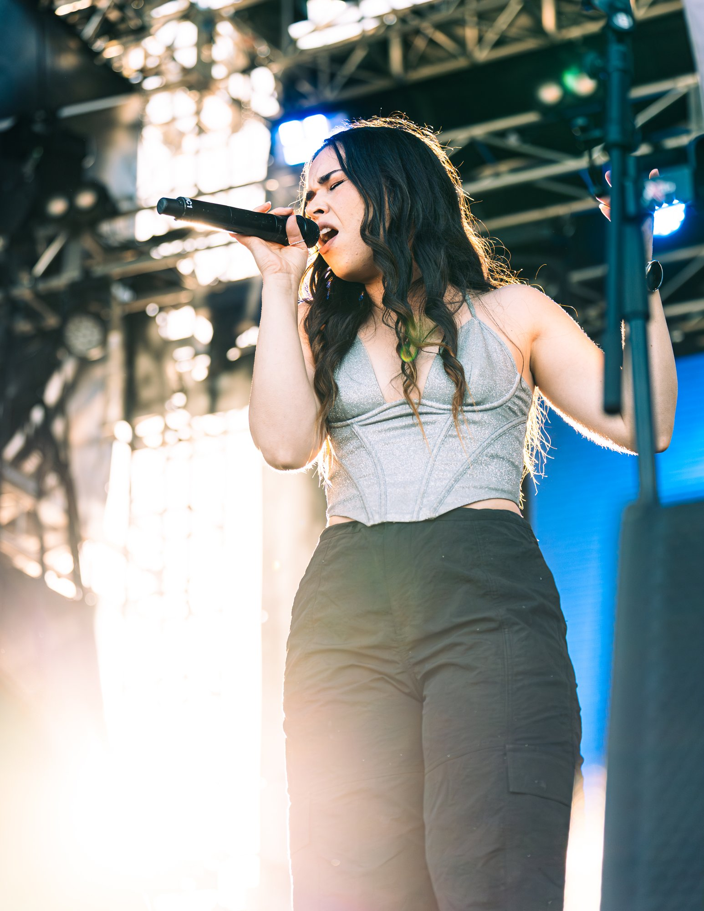
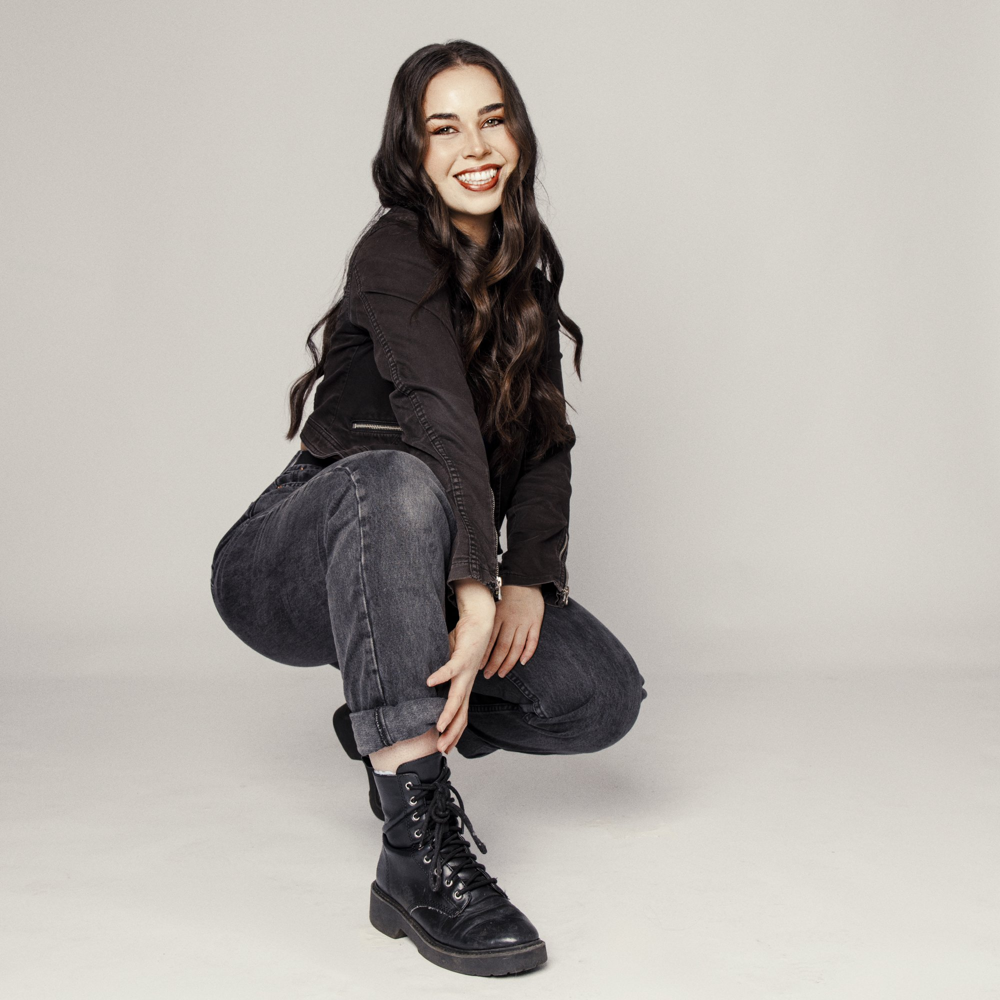

Hobart, Tasmania
BelleRichardson
A voice built for close rooms, not big rooms.
Book BelleAbout
Soul, pop and RnB — certain in delivery.
Belle Richardson is a soul, pop and RnB singer based in Hobart who has opened for Marcia Hines at Festival of Voices and Darryl Braithwaite at Taste of Summer. Over more than a decade in the industry she has played Dark Mofo, Party in the Paddock, Bass in the Domain, Echo Festival and Bonzaki, and holds a Bachelor of Music from the University of Tasmania.
Her work is built on connection, both with the people she plays with and the people she plays for. Beyond her own performing, Belle is a co-founder of the online music video series Soul Spice Sessions and an advocate for a stronger and more connected arts community in Tasmania.

Live
Stages and support
Upcoming
- ‘Starlight City’ Album Launch Featured vocalist with Electrolyte Orchestra · Twisted Lime, Hobart
- DK Effect Taste of Summer · Hobart
Highlights
- Tasmania JewelsWNBL season opener · MyState Bank Arena
- Marcia Hinessupport · Festival of Voices
- Darryl Braithwaitesupport · Taste of Summer
Festivals
- Dark Mofo
- Party in the Paddock
- Bass in the Domain
- Echo Festival
- Bonzaki
Training
- Bachelor of MusicUniversity of Tasmania
- A decade in the industryTasmania & beyond
Frames


Watch
Live takes
Full sessions filmed with XO Sounds, and moments caught in the room.
Scroll for more →
Sessions
Soul Spice Sessions
An online music video series Belle co-founded to put Tasmanian players in front of a wider room — live takes, close mics, and the musicians who make the island's scene worth staying for.
It comes from the same place the rest of her work does: a belief that the arts community here is stronger when it is connected.
Intimate.
Magnetic.
Composed.
Bookings
Let's put something in the room.
Available for festivals, venues, private events and support slots across Tasmania and the mainland.
Also sings with DK Effect and Belle’s Boys.